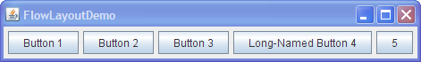

Lección: Disponer Componentes Dentro de un Contenedor
Usando los Gestores de Diseño
Un gestor de diseño es un objeto que implementa el interfaz LayoutManager *
y determina el tamaño y posición de los componentes dentro de un contenedor. Aunque los componentes pueden
suministrar consejos de tamaño y alineación, el gestor de diseño del contenendor tiene la última palabra sobre
el tamaño y posición de los componentes dentro de un contenedor.
Nota: Esta lección cubre la escritura de código de diseño a mano, lo cual puede ser desafiante. Si no está interesado en aprender todos los detalles de la gestión del diseño, preferirá usar el gestor de diseño
GroupLayout combinado con una herramienta de construcción para diseñar su IGU.
Una de tales herramientas de construcción es el
EID NetBeans. De otra manera, si quiere
codificar a mano y no quiere usar GroupLayout, entonces se recomienda GridBagLayout
como el gestor de diseño más flexible y potente.
Si está interesado en usar JavaFX para crear su IGU, vea Trabajar Con Diseños en JavaFX.
Esta sección describe algunas de las tareas comunes relacionadas con el uso de los gestores de diseños:
- Establecer el Gestor de Diseño
- Añadir Componentes a un Contenedor
- Proporcionar Sugerencias de Tamaño y Alineamiento
- Colocar Espacio Entre Componentes
- Establecer la Orientación del Contenedor
- Consejos al Elegir un Gestor de Diseño
- Gestores de Diseño de Terceros
Establecer el Gestor de Diseño
Como una regla, los únicos contenedores cuyos gestores de diseño necesita preocuparse son los
JPanels y los
paneles de contenido.
Cada objeto JPanel es inicializado poara usar un FlowLayout, a menos que especifique
algo diferente cuando crea el JPanel. Los paneles de contenido usan BorderLayout
por defecto. Si no le gusta el gestor de diseño por defecto que un panel o panel de contenido usa, es libre
de cambiarlo a uno diferente. Sin embargo, a mneos que esté usando JToolBar, los gestores
FlowLayout y BorderLayout son sólo útiles para el prototipado. Cualquier aplicación
real necesitará resetear el gestor de diseño. De nuevo, usará una herramienta apropiada para hacer esto, en vez
de codificar el gestor a mano.
Puede establecer el gestor de diseño de un panel usando el constructoro JPanel. Por ejemplo:
JPanel panel = new JPanel(new BorderLayout());
Después de que un contenedor ha sido creado, pues establecer su gestor de diseño usando el método
setLayout. Por ejemplo:
Container contentPane = frame.getContentPane();
contentPane.setLayout(new FlowLayout());
Aunque nosotros recomendamos encarecidamente que use un gestor de diseños, usted puede realizar el diseño sin ellos. Al establecer la propiedad layout de un contenedor a null, hace que el contenedor no use gestor de diseño. Con esta estrategia, llamada posicionamiento absoluto, puede especificar el tamaño y posición de cada componente dentro de ese contenedor. Una desventaja del posicionaiento absoluto es que no ajusta bien cuando el contenedor de nivel superior es redimensionado. No ajusta bien tampoco a las diferencias entre usuarios y sistemas, tales como fuentes de tamaño diferente y configuraciones regionales.
Añadir Componentes a un Contenedor
Cuando añade componentes a un panel o panel de contenido, los argumentos que especifica al método
add dependen del gestor de diseño que el panel o el panel de conteido está usando. En realidad,
algunos gestores de diseño incluso no requieren que añada el componente explícitamente; por ejemplo,
GroupLayout. Por ejemplo, BorderLayout requiere que especifiques el área al cual el
componente debe ser añadido (usando una de las constantes definidas en BorderLayout) usando código
como este:
pane.add(aComponent, BorderLayout.PAGE_START);
La sección cómo-hacer para cada gestor de diseño tiene detalles de qué, si los hay, argumentos necesita para
especificar al método add. Algunos gestores de diseños, tales como GridBagLayout y
SpringLayout, requiere un procedimiento elaborado de configuración. Muchos gestores de diseño,
sin embargo, simplemente colocal los componentes basados en el orden en el que fueron añadidos al contenedor.
Los contenedores Swing distintos a JPanel y paneles de contenido generalmente ofrecen una IPA
que usará en vez del método add. Por ejemplo, en vez de añadir un componente directamente a un
panel de desplazamiento (o, en
realidad, a su ventana gráfica), o especifica el componente en el cosntructor JScrollPane o usa
setViewportView. Debido a IPAs especializadas como esta, no necesita saber que gestor de diseño
(si existe) muchos contenedores de Swing usan. (Para el curioso: los paneles de desplazamiento utilizan un
gestor de diseño llamado ScrollPaneLayout.)
Para información sobre cómo añadir componentes a un contenedor específico, vea la página de cómo-hacer para el contenedor. Puede encontra las páginas de cómo hacer del componente usando Cómo Usar Varios Componentes.
Proporcionar Sugerencias de Tamaño y Alineamiento
Algunas veces necesita personalizar los consejos de tamaño que un componente suministra al gestor de diseño de
su contenedor, así que el componente sea bien dispuesto. Puede hacer esto especificando uno o más de los
tamaños mínimos y máximos preferidos del componente. Puede invocar los métodos del compoente para establecer la
sugerencia de tamaño ─ setMinimumSize, setPreferredSize, y
setMaximumSize. O puede crear un subclase del componente que sobreescriba los métodos getter
apropiados ─ getMinimumSize, getPreferredSize, y
getMaximumSize. Aquí tiene un ejemplo de cómo hacer el tamaño máximo de un objeto ilimitado:
component.setMaximumSize(new Dimension(Integer.MAX_VALUE,
Integer.MAX_VALUE));
Muchos gestores de diseño no prestan antención al tamaño solicitado máximo de un componente. Sin embargo,
BoxLayout y SpringLayout lo hacen. Además, GroupLayout suministra la
habilidad para establecer el tamaño mínimo, preferido o máximo explícitamente, sin tocar el componente.
Además de proporcionar sugerencias de tamaño, puede también suministrar consejos de alineación. Por ejemplo,
puede especificar que los bordes superiores de dos componentes estén alineados. Establece la sugerencia de
alineación o invocando los métodos setAlignmentX y setAlignmentY del componente, o
sobreescribiendo los métodos getAlignmentX y getAlignmentY. Aunque la mayoría de los
gestores de diseño ignoran las sugerencias de alineación, BoxLayout las respeta. Puede encontrar
ejemplos de establecimiento de la alineación en
Cómo Usar BoxLayout.
Colocar Espacio Entre Componentes
Tres factores influyen en la cantidad de espacio entre los componentes visibles en un contenedor.
- El gestor de diseño
- Algunos gestores de diseño automáticamente colocan espacio entre los componentes; otros no. Algunos le permiten especificar la cantidad de espacio entre componentes. Vea la página cómo-se hace de cada gestor de diseño para más información sobre el soporte de espaciado.
- Componentes invisibles
-
Puede crear componentes ligeros que no realizan pintado, pero que pueden tomar espacio en el IGU. A menudo,
usted usa componentes invisble en contenedores controlados por
BoxLayout. Vea Cómo Usar BoxLayout para ejemplos de uso de los compoentes invisibles. - Bordes vacíos
- No importando qué gestor de diseño use, puede afectar la cantidad de espacio aparente entre componentes añadiendo bordes vacíos a los componentes. Los mejores candidatos para los bordes vacíos son los componentes que típicamente no tienen borde por defecto, tales como los paneles y las etiquetas. Algunos otros componentes podrían no funcionar bien con bordes en alguna implementación de apariencia, debido a la forma que el código de pintado está implementado. Para información sobre bordes, vea Cómo Usar Bordes.
Establecer la Orientación del Contenedor
Este sitio web está escrito en inglés (Nota del Traductor: el original en inglés), con texto que se ejecuta de
izquierda a derecha y luego de arriba a abajo. Sin embargo, muchos otros lenguajes tienen orientaciones
diferentes. La propiedad componentOrientation suministra un forma de indicar que un componente en
particular usará algo diferente de la orientación por defecto izquierda-a-derecha,de-arriba-a-abajo. En un
componente tal como un botón de radio, la orientación podría ser usada como una sugerencia que la apariencia
cambiaría las ubicaciones del icono y el texto en el botón. En un contenedor, la orientación es usada como una
sugerencia al gestor de diseño.
Para establecer la orientación de un contenedor, puede usar o el método definido en el Component
setComponentOrientation
o, establecer la orientación en los hijos del contenedor, también
applyComponentOrientation
. El argumento para cualquiera de los métodos puede ser una constante como
ComponentOrientation.RIGHT_TO_LEFT, o puede ser una llamada al método
getOrientation(Locale)
de ComponentOrientation. Por ejemplo, el código suguiente causa que todos los
JComponents sean inicializados con una configuración regional de lenguaje Arábico, y entonces
establece la orientación del panel de contenidos y todos sus componentes internos de forma adecuada:
JComponent.setDefaultLocale(new Locale("ar"));
JFrame frame = new JFrame();
...
Container contentPane = frame.getContentPane();
contentPane.applyComponentOrientation(
ComponentOrientation.getOrientation(
contentPane.getLocale()));
Aquí tiene dos imágenes mostrando cómo FlowLayout dispone los componentes en contenedores que son
exactamente los mismos, excepto por su orientación.

Orientación por defecto (izquierda-a-derecha)

Orientación derecha-a-izquierda
Los gestores de diseños estándar que soportan orientación de componnentes son FlowLayout,
BorderLayout, BoxLayout, GridBagLayout, y GridLayout.
Nota: Se debe tener cuidado de que la orientación del componente se aplique a los renderizadores, editores y cualquier otro componente inalcanzable a través del recorrido normal de la jerarquía de contención.
Consejos al Elegir un Gestor de Diseño
Los gestores de diseño tienen diferentes fortalezas y debilidades. Esta sección describe algunos escenarios comunes de diseño y qué gestor de diseño podría funcionar para cada escenario. Sin embargoa, una vez más, se recomienda encarecidamente que use una herramienta de construcción para crear sus gestores de diseños, tal como el constructor de IGUs Mattise del EID NetBeans , en vez de codificar los gestores a mano. Los escenarios enumerados a continuación se brindan con fines informativos, en caso de que tenga curiosidad sobre qué tipo de gestor se usa en diferentes situaciones, o en caso de que absolutamente deba codificar su gestor manualmente.
Si ninguno de los gestores de diseño que describimos es adecuado para su situación y no puede usar una
herramienta de construcción, siéntase libre de usar otros gestor de diseños que puede escribir o encontrar.
También tenga en cuenta que los gestores de diseño flexibles tales como GridBagLayout y
SpringLayout pueden cumplir muchas necesidades de diseño.
- Escenario: Necesita visualizar un componente en todo el espacio que pueda obtener.
-
Si ése el único componente en su contenedor, use
GridLayoutoBorderLayout. De otra forma,BorderLayoutoGridBagLayoutpodría ser una buena elección.Si usa
BorderLayout, necesitará color el componente necesitado de espacio en el centro. ConGridBagLayout, necesitará establecer las limitaciones para el componente de forma quefill=GridBagConstraints.BOTH. Otra posibilidada es usarBoxLayout, haciendo que el componente necesitado de espacio especifique tamaños preferidos y máximos muy grandes. - Escenario: Necesita visualizar varios componentes en una fila compacta en su tamaño natural.
-
Considere usar un
JPanelpara agrupar los componentes y usar o el gestor por defecto deJPanelFlowLayouto el gestorBoxLayout.SpringLayoutes también bueno para esto. - Escenario: Necesita visualizar varios componentes del mismo tamaño en filas y columnas.
-
GridLayoutes perfecto para esto. - Escenario: Necesita visualizar varios componentes en una fila o columna, posiblemente con cantidades variadas de espacio entre ellos, alineación personalizada, o tamaños personalizados de los componentes.
-
BoxLayoutes perfecto para esto. - Escenario: Necesita visualizar columnas alineadas, como en un interfaz parecido a un formulario donde una columna de etiquetas es usada para describir los campos de texto en una columna adyacente.
-
SpringLayoutes una elección natural para esto. La claseSpringUtilitiesusada por varios ejemplos del Tutorial definen un métodomakeCompactGridque le permite fácilmente alinear múltiples filas y columnas de componentes. - Escenario: Tiene un diseño complejo con muchos componentes.
-
Considere o usar un gestor de diseño muy flexible tal como
GridBagLayoutoSpringLayout, o agrupar los componentes en uno o másJPanels para simplificar el diseño. Si toma el último enfoque, cadaJPanelpodría usar un gestor de diseño diferente.
Gestores de Diseño de Terceros
Otros gestores de diseños de terceros han sido creados por la comunidad Swing, para complementar aquellos proporcionados por la plataforma Java. La lista siguiente no es de ninguna manera definitiva, pero los gestores de diseño listados abajo son los más populares:
*De regreso en KDJ 1.1 un segundo interfaz, LayoutManager2, fue presentado.
LayoutManager2 extiende LayoutManager, proporcionando soporte para el tamaño máximo
y alineamiento. LayoutManager2 también añade los métodos addLayoutComponent, que
toman un Object, y invalidateLayout. Los gestores de diseño también necesitan las
notificaciones suministradas por LayoutManager2, así que cualquier gestor de diseño moderno
necesitará implementarlo.